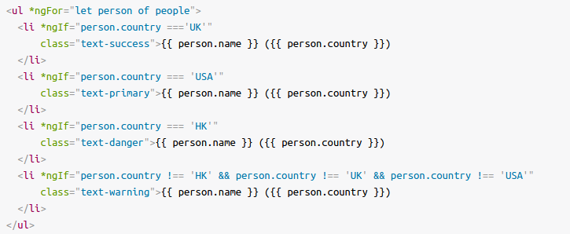

Angular
Presented by: Youness Houdass
Email: Houd.youness@gmail.com
I- Introduction
I- 1. What is Angular?
Angular is a TypeScript-based open-source web application framework led by the Angular Team at Google and by a community of individuals and corporations, Angular is a complete rewrite from the same team that built AngularJS.
It is one of the most popular JavaScript frameworks, that developers use to build dynamic websites.
It is an open-source software engineering framework used for building SPAs (single page application).
I- 2. AngularJS vs. Angular2+
Originally, the rewrite of AngularJS was called Angular 2 by the team, but this led to confusion among developers. To clarify, the team announced that separate terms should be used for each framework with AngularJS referring to the 1.X versions and Angular without the JS referring to versions 2 and up.
Beneficts
- Extensive documentation
- Testing
- Mobile and desktop compatibility
- Increase performance
- Increased modularity / more expressive code
- New web standards
- Full-featured & powerful
- Elegent programming style & patterns
- Rich package ecosystem
I- 3. Setup projet
Check: Angular: Getting started
- npm i -g @angular/cli
- ng new my-sicpa-app
- ng new my-sicpa-app
- cd my-dream-app
- ng serve
I- 4. Angular CLI

The CLI is a geart tool for big and very big Angular projects! It allows to focus on Angular code instead of workflow tasks.
The Angular CLI makes it easy to create an application that already works, right out of the box. It already follows the best practices!
You can also generate components, routes, services and pipes ... etc, with a simple command. The CLI will also create simple test shells for all of these.
I- 5. sicpa-ng-schematics
Check: Sicpa NG Schematics
II- Fundamentals
II- 1. How an Angular App gets Loaded and Started?
II- 2. Components are Important!
II- 3. Create a component
ng generate component user
ng g c userII- 4. Databinding

II- 4. a. String interpolation
- The text between the braces is often the name of a component property. Angular replaces that name with the string value of the corresponding component property.
- String interpolation is used to print/output dynamic data on HTML templates
{{ data }}II- 4. b. Property binding
- Property binding is used to pass data from the component class (component.ts) and setting the value of the given element in the user-end (component.html)
- Property binding is an example of one-way databinding where the data is transferred from the component to the class
- The main advantage of property binding is that it facilitates you to control elements property
- It's weird at first, but it's actually valid HTML. An HTML attribute name can start with anything, except for a few characters such as a quotation mark, an apostrophe, a slash, an equals, a space ... Interpolation {{ name }} is just syntactic sugar for the following line:
Attribute/class/style binding
Property binding can be used with diffrent forms:
Attribute binding
...
Class binding
Some textStyle binding
Blue textOr,
Blue textII- 4. c. Event binding
Angular facilitates us to bind the events along with the methods, this process is known as event binding. Event binding is used with parenthesis ()
You can even make event binding to specific keys and events
More examples:

II- 4. d. Two way binding
(Banana in the box)
In two-way databinding, automatic synchronization of data happens between the Model and the View. Here, change is reflected in both components. Whenever you make changes in the Model, it will be reflected in the View and when you make changes in View, it will be reflected in Model
II- 5. Understanding Directives
Directives are components without a view, they are components without a template, Or to put it another way, components are directives with a view.
There are two types of directives in Angular:
- Structural Directives are directives which change the structure of the DOM by adding or removing elements. There are three built in structural directives, NgIf, NgFor and NgSwitch.
- Attribute Directives are used to change the look and behavior of the DOM elements. For example: ngClass, ngStyle etc.
II- 6. *ngIf & *ngFor & ngSwitch
II- 6. a. *ngIf
For more consistance
II- 6. b. *ngFor
{{ i }} - {{ item }}Or,
{{ i }} - {{ item }}
II- 6. c. ngSwitch
II- 7. ngClass & ngStyle
II- 7. a. ngClass
- using stringExp
Some text - using arrayExp
Some text - using objExp
Some Text - using conditional stringExp
Some text
II- 7. b. ngStyle
II- 8. Debugging
III- Components
III- 1. template/templateUrl
III- 2. selectors
selector: 'app-users'
selector: '.app-users'
selector: '[app-users]'
<div app-users></div>III- 3. styles/styleUrls
III- 4. @Input
III- 5. @Output
@Input is used to pass data from parent to child and the opposite, @Output, can be used when you want to pass data from the child to the parent.

III- 6. Encapsulation
- encapsulation: ViewEncapsulation.Emulated Emulate Native scoping of styles by adding an attribute containing surrogate id to the Host Element and pre-processing the style rules provided via styles or styleUrls, and adding the new Host Element attribute to all selectors. This is the default option.
- encapsulation: ViewEncapsulation.Native Use Shadow DOM to encapsulate styles.
- encapsulation: ViewEncapsulation.None Don't provide any template or style encapsulation.
III- 7. Template reference variables
A template reference variable is often a reference to a DOM element within a template. It can also be a reference to an Angular component or directive or a web component (Read more at Angular.io). That means you can easily access the variable anywhere in the template. You declare a reference variable by using the hash symbol (#) or the (ref-) synthax, e.g : #var or ref-var.
III- 8. @ViewChild
Want to get access to a child component, directive or a DOM element from a parent component class? It’s easy to do with the ViewChild decorator. ViewChild returns the first element that matches a given component, directive or template reference selector. In cases where you’d want to access multiple children, you’d use ViewChildren instead.
III- 9. @ContentChild
Includes only elements that exists within the ng-content tag.
III- 10. Lifecycle Hooks
- A component has a lifecycle managed by Angular.
- Angular creates and renders components along with their children, checks when their data-bound properties change, and destroys them before removing them from the DOM.
- Angular offers lifecycle hooks that provide visibility into these key life moments and the ability to act when they occur.

III- 10. a. ngOnChanges
Respond when Angular (re)sets data-bound input properties. The method receives a SimpleChanges object of current and previous property values.
Called before ngOnInit() and whenever one or more data-bound input properties change.
III- 10. b.ngOnInit
Initialize the directive/component after Angular first displays the data-bound properties and sets the directive/component's input properties.
Called once, after the first ngOnChanges().
III- 10. c. ngDoCheck
Detect and act upon changes that Angular can't or won't detect on its own.
Called during every change detection run, immediately after ngOnChanges and ngOnInit.
III- 10. d. ngAfterContentInit
Respond after Angular projects external content into the component's view / the view that a directive is in.
Called once after the first ngDoCheck().
III- 10. e. ngAfterContentChecked
Respond after Angular checks the content projected into the directive/component.
Called after the ngAfterContentInit() and every subsequent ngDoCheck().
III- 10. f. ngAfterViewInit
Respond after Angular initializes the component's views and child views / the view that a directive is in.
Called once after the first ngAfterContentChecked.
III- 10. g. ngAfterViewChecked
Respond after Angular checks the component's views and child views / the view that a directive is in.
Called after the ngAfterViewInit() and every subsequent ngAfterContentChecked().
III- 10. h.ngOnDestroy
Cleanup just before Angular destroys the directive/component. Unsubscribe Observables and detach event handlers to avoid memory leaks.
Called just before Angular destroys the directive/component.
IV- Directives
IV- 1. ElementRef
<p appBasicHighlight>App Basic Highlight Example</p>constructor(private elementRef: ElementRef) {}ngOnInit() {
this.elementRef.nativeElement.style.backgroundColor = 'green';
}IV- 2. Renderer
constructor(private elRef: ElementRef, private renderer: Renderer2) {}ngOnInit() {
this.renderer.setStyle(this.elRef.nativeElement, 'backgroundColor', 'blue');
}IV- 3. @HostBinding
@HostBinding('style.backgroundColor') backgroundColor;ngOnInit() { this.backgroundColor = 'blue'; }IV- 4. @HostListener
@HostListener('mouseenter') mouseenter(eventData: Event) {
this.backgroundColor = this.highlightColor;
}IV- 5. @Input
@Input() highlightColor = 'transparent';<p appBetterHighlight [highlightColor]="'blue'">Highlight Directive</p>Or,
<p appBetterHighlight highlightColor="blue">Highlight Directive</p>V- Services & Dependency Injection
V- 1. Introduction
Components shouldn't fetch or save data directly and they certainly shouldn't knowingly present fake data. They should focus on presenting data and delegate data access to a service.
V- 2. @Injectable
@Injectable() lets Angular know that a class can be used with the dependency injector.
V- 3. Providers
V- 4. @Inject
@Inject() is a manual mechanism for letting Angular know that a parameter must be injected.
V- 5. @ProvidedIn
V- 6. UseClass, UseFactory, UseValue & UseExisting
VI- Routing
VI- 1- Introduction
- Enter a URL in the address bar, and the browser navigates to a corresponding page.
- Click links on the page, and the browser navigates to a new page.
- Click the browser's back and forward buttons, and the browser navigates backward and forward through the history of pages you've seen.
VI- 2- Setup des routes
For more informationsVI- 3- <router-outlet>
Acts as a placeholder that Angular dynamically fills based on the current router state.
VI- 4- RouterLink, RouterLinkActive & RouterLinkActiveOptions
VI- 5- Understanding Navigation Paths
VI- 6- Navigating Programmatically (Typescript)
VI- 7- relativeTo
VI- 8- Pass & fetch parameters, des queryParams & fragments
VI- 9- Children (Nested Routes)
VI- 10- QueryParamsHandling
VI- 11- Redirection / Wildcard (**)
VI- 12- canActivate, canActivateChild & canDeactivate
VI- 13- Static data (data) & Dynamic data
VII- RxJS
VII- 1- Introduction
RxJS is a library for reactive programming using Observables, to make it easier to compose asynchronous or callback-based code.
VII- 2- Observable/Observer
An Observable sets up the observer and connects it to the "thing" we want to get values from. This "thing" is called a producer, and is a source of values, perhaps from a click or input event in the DOM. It could even be something more complex such as communication over HTTP.
An Observable is an object that implements a .subscribe method that takes as parameter an Observer, which has the following form:
const observer = {
next: val => console.log(val), // a function to be performed at each new event
error: err => console.error(err), // a function to execute in case of error
complete: () => console.info('Complete!') // a function to execute when the observable has finished
};
VII- 3- Observable.create
VII- 4- Unsubscribe
VII- 5- Operators
VII- 6- Promise vs. Observable
VII- 7- Subject/BehaviorSubject
VIII- Pipes
VIII- 1- Introduction
Pipes are a simple way to transform values in an Angular template
VIII- 2- Parametrizing Pipes
VIII- 3- Creating a Custom Pipe
VIII- 4- Pure/Impure
IX- Forms
IX- 1- Template-Driven Form (TD) vs. Reactive Form
IX- 2- Template-Driven Form
IX- 2- a- Setup Template-Driven Form
IX- 2- b- Form state
IX- 2- c- Validation
IX- 2- d- Outputting validation error messages
IX- 2- e- Set default values with ngModel property binding
IX- 2- f- ngGroupModel
IX- 2- g- setValue/patchValue
IX- 2- h- Reset & Use the form
IX- 2- Reactive Form
IX- 2- a- Setup reactive form
IX- 2- b- Syncing HTML with the Form
IX- 3- c- Validation
IX- 3- d- Getting Access to controls
IX- 3- e- Reactive grouping controls
IX- 3- f- Custom Async validators
X- Http & Firebase
X- 1- HttpClient & Http verbs
Check: HttpClientX- 2- Interceptors
XI- Modules
X- 1- Introduction
XI- 2- Lazyload modules
XI- 3- Preloading Lazy Loaded Routes
XI- 4- JIT vs. AOT
Check: JIT vs. AOTXII- Deployment
XII- 1- Introduction
XII- 2- Deploying an Angular App
Check: How to deploy an Angular AppXIII- Unit Testing
XIII- 1- Introduction
XIII- 2- Tutorial
Check: DemongStore
VII- 1- Introduction
ngStore is RxJS powered state management for Angular applications, inspired by Redux.
VII- 2- Implementations
- @ngrx/store
- ng2-redux
- @angular-redux/store...
VII- 3- Getting Started
npm i -S @ngrx/storeVII- 4- Reducers
Pure functions called reducers take the previous state and the next action to compute the new state.
Reducers specify how the application's state changes in response to actions sent to the store.
VII- 5- Actions
Actions describe state changes
Remember that actions only describe what happened, but don't describe how the application's state changes.
VII- 6- Store Devtools
@ngrx/store-devtools instruments your store letting you use a powerful time-travelling debugger
npm i -S @ngrx/store-devtoolsVII- 7- Entity
@ngrx/entity provides an API to manipulate and query entity collections
npm i -S @ngrx/entityVII- 8- Router
Keeps the state of @angular/router in your store
npm i -S @ngrx/router-storeVII- 9- Effects
Isolates side effects from your UI by expressing side effects as sources of actions
npm i -S @ngrx/effectsVII- 10- NgRx Schematics
ng config cli.defaultCollection @ngrx/schematicsnpm i -D @ngrx/schematicsng generate entity --name User --module somewhere/somewhere.module.tshttps://github.com/ngrx/platform/tree/master/docs/
VII- 11- Dependencies
npm i @ngrx/{store,effects,entity,store-devtools} -S